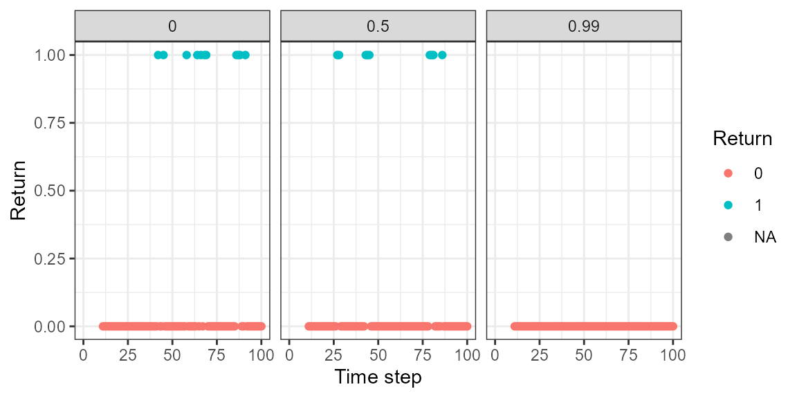
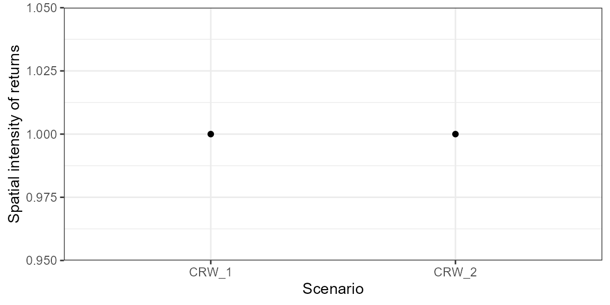
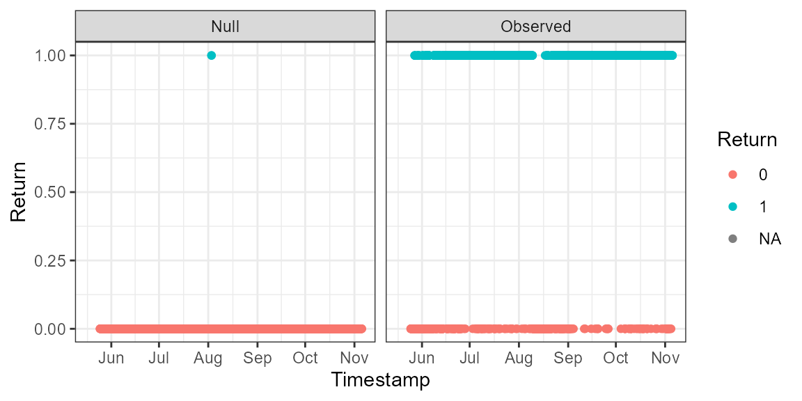
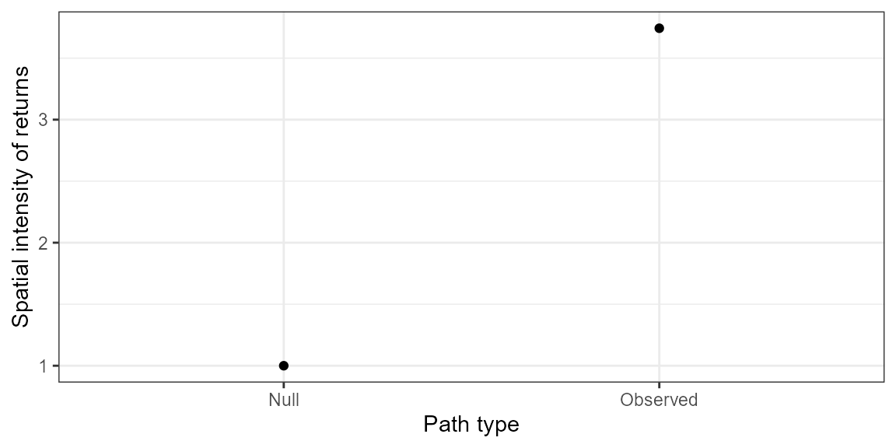

Calculating animal site fidelity in R with package `fidelity`
Simona Picardi
December 2022
fidelity_vignette1.Rmd
library(fidelity)Introduction
The fidelity package provides functions to calculate
animal site fidelity at multiple spatio-temporal scales by contrasting
observed patterns of return to ecologically meaningful baseline
expectations derived from null, memory-free movement models. This
package is for you if:
- You are interested in exploring the effect of movement parameters and landscape characteristics on patterns of return using agent-based simulation;
- You are interested in establishing an ecologically meaningful null expectation for site fidelity in your study system.
For more context, please refer to the associated paper:
Picardi, S., Abrahms, B., Gelzer, E., Morrison, T., Verzuh, T., Merkle, J. “Defining null expectations for animal site fidelity”. Ecology Letters (2022). https://doi.org/10.1111/ele.14148
Depending on which goal you are after, you will follow one of two possible workflows, illustrated in this diagram:

Goal 1: Explore effect of movement and landscape characteristics on patterns of return
If our goal is to quantify how emerging patterns of return vary as a function of the underlying movement and landscape characteristics, we can use an agent-based simulation approach to generate movement tracks under a set of chosen movement models. This package implements movement models from the family of random walks. Within each model, we can define a set of scenarios that correspond to different sets of model parameter values.
Parameterize simulation scenarios
The simplest model implemented in fidelity is a
correlated random walk (CRW). Under this model, we can change the value
of the parameter \(\rho\) (the movement
autocorrelation, or directional persistence). When \(\rho = 0\), the model is a completely
random walk, where each angle is independent of the previous one. As the
value of \(\rho\) increases,
consecutive angles become increasingly correlated. We would expect a
higher movement autocorrelation to result in fewer returns than a lower
one. Let’s use the function create_scenarios_crw() to
parameterize three CRW scenarios:
scen_crw <- create_scenarios_crw(rho = c(0, 0.5, 0.99))
#> Creating 3 CRW scenariosThe first scenario is a completely random walk, the second scenario is a correlated random walk with intermediate movement autocorrelation, and the third scenario is an almost perfectly correlated random walk.
As of now, three more movement models are implemented in
fidelity besides a CRW: a constrained correlated random
walk (CCRW), where an agent moves within a non-permeable reflective
boundary that represents an enclosure; a mixture correlated random walk
(MCRW), where an agent moves faster and straighter through unprofitable
habitat and slower and more tortuously through profitable habitat; and a
biased correlated random walk (BCRW), where an agent is attracted to
profitable habitat in its surroundings. Unlike the first two, these last
two models require that the agent moves on a landscape with
heterogeneous habitat quality. Let’s use BCRW as an example of how to
parameterize this type of model.
To parameterize a BCRW scenario, we must start by creating one or
more synthetic landscapes for the agent to move through. We can create
landscapes in fidelity using the function
sim_land(). Here, assuming meters as the units, I am
creating a set of landscapes with a resolution of 10 m and a 1-km
extent. I am defining the center point of the landscape at coordinates
(0, 0). The parameter \(\kappa\)
indicates spatial aggregation, or how “clumpy” the habitat is. Let’s
create two landscapes with different amounts of spatial aggregation (50
and 500). The parameter \(\chi\)
indicates spatial heterogeneity, or how much habitat quality varies
across the landscape. Here, we’ll hold that constant for both
landscapes.
This is what the resulting landscapes look like:

The simulation functions we’ll use will need to read the landscape rasters from disk, so let’s go ahead and save them as files:
raster::writeRaster(lands,
filename = "inst/Landscapes/land.tif",
bylayer = TRUE,
suffix = names(lands))And it’s important to assign names to each raster to match the path we’re going to use to load them in (you can use absolute paths or, better, relative paths with respect to your working directory):
Now let’s define a set of BCRW scenarios. We’ll hold the value of \(\rho\) constant across scenarios. The parameter \(\beta\) is the directional bias and it indicates how strongly the agent is attracted to high-quality habitat. We’ll create a scenario with no bias at all (note that, without bias, this is the same exact scenario as the second CRW scenario we parameterized above), a scenario with low bias, and a scenario with moderate bias. The higher the bias, the more likely we expect returns to occur. We want each of these sets of movement parameter in combination with each of the landscapes we have generated, for a total of 1 * 3 * 2 = 6 scenarios:
scen_bcrw <- create_scenarios_bcrw(rho = 0.5,
beta = c(0, 0.1, 0.5),
lands = land_names)
#> Creating 6 BCRW scenariosNow we can rbind all the scenarios together into a
single data frame:
(scen <- rbind(scen_crw, scen_bcrw))
#> rho boundary_size habitat_effect beta
#> 1 0.00 NA NA NA
#> 2 0.50 NA NA NA
#> 3 0.99 NA NA NA
#> 4 0.50 NA NA 0.0
#> 5 0.50 NA NA 0.1
#> 6 0.50 NA NA 0.5
#> 7 0.50 NA NA 0.0
#> 8 0.50 NA NA 0.1
#> 9 0.50 NA NA 0.5
#> lands kappa chi scenario_id
#> 1 <NA> NA NA CRW_1
#> 2 <NA> NA NA CRW_2
#> 3 <NA> NA NA CRW_3
#> 4 inst/Landscapes/land_kappa_50_chi_0.5.tif 50 0.5 BCRW_1
#> 5 inst/Landscapes/land_kappa_50_chi_0.5.tif 500 0.5 BCRW_2
#> 6 inst/Landscapes/land_kappa_50_chi_0.5.tif 50 0.5 BCRW_3
#> 7 inst/Landscapes/land_kappa_500_chi_0.5.tif 500 0.5 BCRW_4
#> 8 inst/Landscapes/land_kappa_500_chi_0.5.tif 50 0.5 BCRW_5
#> 9 inst/Landscapes/land_kappa_500_chi_0.5.tif 500 0.5 BCRW_6Simulate movement paths
Once we have defined our simulation scenarios, it’s time to simulate movement paths. To run a BCRW, we will need to specify a value of perceptual range, i.e., how far away can the agent perceive a high-quality patch and direct its movements towards it. This parameter should be set to a biologically reasonable value, and of course it is also interesting to see how results are affected by it. Here, we’ll set the perceptual range to 50 m:
prange <- 50The BCRW simulation function will also require a map of pixel
neighborhoods. These maps are specific to the landscape extent and
resolution, so they will need to be re-calculated for new landscapes. In
our case, the two landscapes have the same extent and resolution (only
the value of \(\kappa\) varies between
them), so we can calculate the neighborhoods just once using one of the
two landscapes as the template. We can use the function
get_neighbors() and pass it our chosen value of perceptual
range:
neigh <- get_neighbors(lands[[1]], prange = prange)We are finally ready to simulate! The function
simulate_tracks() is a wrapper function that will call the
appropriate model-specific simulation function depending on how each
scenario is parameterized, so we can run simulations on different types
of models all at once. We’ll need to define how many steps each
simulation should run for (here, let’s use 100), how many replicates
should be run (if we wanted to make some robust conclusions we would
need a large number of replicates, but for simplicity, let’s just do 1
here), the coordinates of the starting location for each simulation
(these can be jittered by setting jitter = TRUE), and the
shape and scale of the step length distribution (assuming a Weibull
distribution). The remaining arguments are used to pass to the function
our scenario data frame, the value of perceptual range, and the
neighborhood map:
sim <- simulate_tracks(scenarios = scen,
n_steps = 100,
n_tracks = 1,
start_loc = data.frame(x = 0, y = 0),
sl_par = c(1, 20),
prange = prange,
jitter = FALSE,
neighbors = neigh)This is what the output of the simulation will look like:
head(sim)
#> id x y step rho boundary_size habitat_effect beta landscape
#> 1 1 0.000000 0.000000 0 0 NA NA NA <NA>
#> 2 1 -14.945691 -21.910068 1 0 NA NA NA <NA>
#> 3 1 4.800396 -20.926486 2 0 NA NA NA <NA>
#> 4 1 2.837701 -9.958197 3 0 NA NA NA <NA>
#> 5 1 2.585969 -8.049080 4 0 NA NA NA <NA>
#> 6 1 28.997396 -26.154277 5 0 NA NA NA <NA>
#> scenario_id
#> 1 CRW_1
#> 2 CRW_1
#> 3 CRW_1
#> 4 CRW_1
#> 5 CRW_1
#> 6 CRW_1
tail(sim)
#> id x y step rho boundary_size habitat_effect beta
#> 886 1 -239.7802 -338.2598 95 0.5 NA NA 0.5
#> 887 1 -227.3308 -403.2010 96 0.5 NA NA 0.5
#> 888 1 -236.5789 -417.1284 97 0.5 NA NA 0.5
#> 889 1 -235.3682 -412.1410 98 0.5 NA NA 0.5
#> 890 1 -222.6736 -405.9211 99 0.5 NA NA 0.5
#> 891 1 -212.5907 -414.7889 100 0.5 NA NA 0.5
#> landscape scenario_id
#> 886 fidelity/inst/Landscapes/land_kappa_500_chi_0.5.tif BCRW_6
#> 887 fidelity/inst/Landscapes/land_kappa_500_chi_0.5.tif BCRW_6
#> 888 fidelity/inst/Landscapes/land_kappa_500_chi_0.5.tif BCRW_6
#> 889 fidelity/inst/Landscapes/land_kappa_500_chi_0.5.tif BCRW_6
#> 890 fidelity/inst/Landscapes/land_kappa_500_chi_0.5.tif BCRW_6
#> 891 fidelity/inst/Landscapes/land_kappa_500_chi_0.5.tif BCRW_6Let’s take a look at the path we simulated under scenario
CRW_1 (a completely random walk):
plot(sim[sim$scenario_id == "CRW_1" & sim$id == 1, ]$x,
sim[sim$scenario_id == "CRW_1" & sim$id == 1, ]$y,
type = "l", xlab = "x", ylab = "y")
Then, let’s take a look at the path we simulated under scenario
BCRW_2 (a BCRW with low bias in a landscape with low
aggregation):
raster::plot(lands[[1]])
lines(sim[sim$scenario_id == "BCRW_2", ]$x,
sim[sim$scenario_id == "BCRW_2", ]$y)
Finally, let’s take a look at the path we simulated under scenario
BCRW_5 (a BCRW with low bias in a landscape with high
aggregation):
raster::plot(lands[[2]])
lines(sim[sim$scenario_id == "BCRW_5", ]$x,
sim[sim$scenario_id == "BCRW_5", ]$y)
Notice that, in this scenario, the agent ends up reaching the edge of the landscape. In this case, the simulation is interrupted and the remainder of the steps are censored. This is why that specific scenario has only 83 rows instead of 101:
nrow(sim[sim$scenario_id == "BCRW_1", ])
#> [1] 101
nrow(sim[sim$scenario_id == "BCRW_2", ])
#> [1] 101
nrow(sim[sim$scenario_id == "BCRW_3", ])
#> [1] 101
nrow(sim[sim$scenario_id == "BCRW_4", ])
#> [1] 101
nrow(sim[sim$scenario_id == "BCRW_5", ])
#> [1] 83
nrow(sim[sim$scenario_id == "BCRW_6", ])
#> [1] 101Calculate patterns of return on simulated paths
Now that we have a set of simulated paths, we can calculate patterns of returns under each scenario. To make sure we only count returns within each scenario replicate, let’s split the simulation results into a list based on the scenario ID and agent ID:
The function calc_returns() assigns a 1 to steps that
satisfy a custom definition of what a return is and a 0 to steps that do
not. The definition can be customized in space using the argument
dist – how close to a previously visited location does the
agent need to go for us to consider that a return? And it can be
customized in time using the argument lag – how long must
the agent have been a distance dist away from that location
before we count a new visit as a return rather than just residence?
Here, we’ll set dist to 10 meters and lag to
10 steps:
rets <- do.call("rbind", lapply(1:length(sim_list),
FUN = function(x) {
fidelity::calc_returns(
tracks = sim_list[[x]],
dist = 10,
lag = 10)
}))
head(rets, 15)
#> id x y step rho boundary_size habitat_effect beta
#> 1 1 0.000000 0.0000000 0 0.5 NA NA 0
#> 2 1 1.167169 -0.9063084 1 0.5 NA NA 0
#> 3 1 6.644097 -2.6846214 2 0.5 NA NA 0
#> 4 1 7.030207 -3.0187556 3 0.5 NA NA 0
#> 5 1 21.198206 9.0795829 4 0.5 NA NA 0
#> 6 1 53.400107 -22.0152171 5 0.5 NA NA 0
#> 7 1 68.115971 -37.2992881 6 0.5 NA NA 0
#> 8 1 74.518235 -47.8817753 7 0.5 NA NA 0
#> 9 1 75.307828 -65.9028509 8 0.5 NA NA 0
#> 10 1 95.911165 -72.2624229 9 0.5 NA NA 0
#> 11 1 57.427406 -114.5317217 10 0.5 NA NA 0
#> 12 1 73.925033 -140.7330638 11 0.5 NA NA 0
#> 13 1 113.682533 -138.3237969 12 0.5 NA NA 0
#> 14 1 122.176538 -134.0113648 13 0.5 NA NA 0
#> 15 1 131.247000 -133.4714379 14 0.5 NA NA 0
#> landscape scenario_id lag_10
#> 1 fidelity/inst/Landscapes/land_kappa_50_chi_0.5.tif BCRW_1 NA
#> 2 fidelity/inst/Landscapes/land_kappa_50_chi_0.5.tif BCRW_1 NA
#> 3 fidelity/inst/Landscapes/land_kappa_50_chi_0.5.tif BCRW_1 NA
#> 4 fidelity/inst/Landscapes/land_kappa_50_chi_0.5.tif BCRW_1 NA
#> 5 fidelity/inst/Landscapes/land_kappa_50_chi_0.5.tif BCRW_1 NA
#> 6 fidelity/inst/Landscapes/land_kappa_50_chi_0.5.tif BCRW_1 NA
#> 7 fidelity/inst/Landscapes/land_kappa_50_chi_0.5.tif BCRW_1 NA
#> 8 fidelity/inst/Landscapes/land_kappa_50_chi_0.5.tif BCRW_1 NA
#> 9 fidelity/inst/Landscapes/land_kappa_50_chi_0.5.tif BCRW_1 NA
#> 10 fidelity/inst/Landscapes/land_kappa_50_chi_0.5.tif BCRW_1 NA
#> 11 fidelity/inst/Landscapes/land_kappa_50_chi_0.5.tif BCRW_1 NA
#> 12 fidelity/inst/Landscapes/land_kappa_50_chi_0.5.tif BCRW_1 0
#> 13 fidelity/inst/Landscapes/land_kappa_50_chi_0.5.tif BCRW_1 0
#> 14 fidelity/inst/Landscapes/land_kappa_50_chi_0.5.tif BCRW_1 0
#> 15 fidelity/inst/Landscapes/land_kappa_50_chi_0.5.tif BCRW_1 0For each of the lags we specify (in this case, just one), the
function will add a column to our simulation data frame: the value will
be NA for steps that are ineligible to count as returns (in
this case, the first 10), 0 for steps that are not returns, and 1 for
steps that satisfy our definition of returns. In this case, none of the
first 4 steps after our 10-step lag happened to be returns.
Besides knowing whether a return happened or not, we may also be
interested in quantifying the spatial intensity of returns. This metric
is useful because it can help us discriminate between returns that
happen by chance (when few returns are spread among many locations)
versus returns that are driven by more systematic drivers (when many
returns are concentrated among few locations). The function
calc_spint() calculates the spatial intensity of returns
under each of our simulation scenarios:
spint <- calc_spint(rets = rets, dist = 10, lag = 10)Evaluate effect of simulation parameters on patterns of return
Now we can take a look at how the parameter values we used in our scenarios affect the occurrence of returns as well as their spatial intensity. Let’s look at the CRW model first:
library(dplyr)
library(ggplot2)
ggplot(rets %>% filter(!grepl("BCRW", scenario_id)),
aes(x = step, y = lag_10, color = factor(lag_10))) +
geom_point() +
facet_wrap(~ rho) +
theme_bw() +
labs(x = "Time step", y = "Return", color = "Return")
#> Warning: Removed 33 rows containing missing values (geom_point).
ggplot(spint %>%
filter(!grepl("BCRW", scenario_id)) %>%
group_by(scenario_id) %>%
summarize(mean_spint = mean(vals, na.rm = TRUE)),
aes(x = scenario_id, y = mean_spint)) +
geom_point() +
theme_bw() +
labs(x = "Scenario", y = "Spatial intensity of returns")
ggplot(sim %>% filter(!grepl("BCRW", scenario_id)),
aes(x = x, y = y)) +
geom_path() +
facet_wrap(~ rho) +
theme_void()
These plots show that, the higher the movement autocorrelation, the less frequent returns become. There are only two values of spatial intensity because no returns at all occurred under the third scenario, and, based on one track only, we cannot detect a difference here (more replicates would have probably helped). When looking at the tracks, it is evident that movements become much more directed as the movement autocorrelation increases.
Now let’s look at our BCRW scenarios. Let’s start with those that we simulated over a landscape with low spatial aggregation:
ggplot(rets %>% filter(scenario_id %in% c("BCRW_1", "BCRW_2", "BCRW_3")),
aes(x = step, y = lag_10, color = factor(lag_10))) +
geom_point() +
facet_wrap(~ beta) +
theme_bw() +
labs(x = "Time step", y = "Return", color = "Return")
#> Warning: Removed 33 rows containing missing values (geom_point).
ggplot(spint %>%
filter(scenario_id %in% c("BCRW_1", "BCRW_2", "BCRW_3")) %>%
group_by(scenario_id) %>%
summarize(mean_spint = mean(vals, na.rm = TRUE)),
aes(x = scenario_id, y = mean_spint)) +
geom_point() +
theme_bw() +
labs(x = "Scenario", y = "Spatial intensity of returns")
ggplot(sim %>% filter(scenario_id %in% c("BCRW_1", "BCRW_2", "BCRW_3")),
aes(x = x, y = y)) +
geom_path() +
facet_wrap(~ beta) +
theme_void()
Here, we can see that returns become more frequent as the bias towards profitable habitat increases. Spatial intensity is higher in the scenarios with bias compared to the scenario with no bias. When looking at the paths, notice the agent moving much more tortuously in the scenario with strongest bias because it encountered a profitable patch.
What happens when patches are much larger and high-quality habitat is more aggregated?
ggplot(rets %>% filter(scenario_id %in% c("BCRW_4", "BCRW_5", "BCRW_6")),
aes(x = step, y = lag_10, color = factor(lag_10))) +
geom_point() +
facet_wrap(~ beta) +
theme_bw() +
labs(x = "Time step", y = "Return", color = "Return")
#> Warning: Removed 33 rows containing missing values (geom_point).
ggplot(spint %>%
filter(scenario_id %in% c("BCRW_4", "BCRW_5", "BCRW_6")) %>%
group_by(scenario_id) %>%
summarize(mean_spint = mean(vals, na.rm = TRUE)),
aes(x = scenario_id, y = mean_spint)) +
geom_point() +
theme_bw() +
labs(x = "Scenario", y = "Spatial intensity of returns")
ggplot(sim %>% filter(scenario_id %in% c("BCRW_4", "BCRW_5", "BCRW_6")),
aes(x = x, y = y)) +
geom_path() +
facet_wrap(~ beta) +
theme_void()
Similarly, the stronger the bias, the more frequent the returns, although no returns at all happened under the second scenario in this particular instance (remember that this is the scenario where the agent happened to move out of the landscape, which means it had a shorter simulation and fewer chances to return). There are only two values of spatial intensity because no returns happened under one of the three scenarios, and we cannot really detect a difference there.
Through this exercise, we have learned some interesting facts about how simple metrics of behavior and landscape configuration should be expected to affect patterns of returns in real systems.
Goal 2: Quantify site fidelity by contrasting empirical data with an ecologically meaningful null expectation
If our goal is to quantify site fidelity in an empirical system, we can use a slightly different workflow. Let’s make an example with the data from Picardi et al. 2022 (available at https://zenodo.org/record/7079984 – thanks to Dr. Hall Sawyer for generously sharing these data with us!). These are real GPS-tracking data for one individual mule deer collected at a 2-hour resolution during the summer of 2016 in Wyoming:
head(mule)
#> id date x y
#> 1 445 2016-05-17 18:00:00 535031 4792508
#> 2 445 2016-05-17 20:00:00 534595 4792287
#> 3 445 2016-05-17 22:00:00 534611 4792390
#> 4 445 2016-05-18 00:00:00 534558 4792157
#> 5 445 2016-05-18 02:00:00 532876 4792317
#> 6 445 2016-05-18 04:00:00 532647 4792231Rather than simply assuming that any returns we may observe in this animal’s track must be due to memory, we can contrast the empirically observed returns with a baseline non-zero expectation derived from an appropriate null model via simulation.
Parameterize an appropriate null model
Depending on the study objectives, different models can be appropriately chosen as null models for site fidelity. If the objective is to quantify whether the empirically observed returns are due to memory, one should strive to parameterize a null model realistic enough that it can be argued that all behavioral processes other than memory (e.g., movement, habitat selection) have been accounted for. If the observed patterns of returns still exceed what expected based on a model that accounts for everything but memory, then we can confidently attribute the excess to memory. In Picardi et al. 2022, we used an integrated step selection function as a hyper-realistic null model that is able to account for the movement process and the habitat selection process simultaneously. If the objective is to quantify whether the empirically observed returns are generally due to systematic drivers rather than just pure chance, then a simple random walk can be an appropriate null model. Note that, in this case, no inference can be made on the specific drivers of the empirically observed returns, be it movement characteristics, habitat selection, or memory. All we can answer is whether the animal is returning more than would be expected under a random walk or not. Here, for simplicity, let’s use a pure random walk as the null model:
random_scen <- create_scenarios_crw(rho = 0)
#> Creating 1 CRW scenariosSimulate movement paths
Let’s simulate a random walk that starts at the same strating point and includes as many steps as the empirical mule deer track:
sim_null <- simulate_tracks(scenarios = random_scen,
n_steps = nrow(mule),
n_tracks = 1,
start_loc = data.frame(x = mule$X[1], y = mule$Y[1]),
sl_par = c(0.6, 330))The step length parameters specified here were estimated for this individual mule deer at a 2-hour time resolution via integrated step selection analysis.
Calculate patterns of return on simulated paths
Let’s now calculate the occurrence and spatial intensity of returns over the simulated track in output from the null random walk model:
ret_null <- fidelity::calc_returns(tracks = sim_null,
dist = 50,
lag = 12 * 7)
spint_null <- fidelity::calc_spint(ret_null,
dist = 50,
lag = 12 * 7)Note that we set the value of distance to 50 m, meaning that the animal needs to be within 50 m of a previously visited location for a visit to count as a return. We used a lag of 12 * 7 = 84, corresponding to a week (12 locations per day times 7 days), meaning that the animal needs to have been away from a location for at least one week for a new visit to count as a return.
Calculate patterns of return on empirically observed paths
Let’s now calculate the occurrence and spatial intensity of returns over the empirically observed mule deer track:
ret_obs <- fidelity::calc_returns(tracks = mule,
dist = 50,
lag = 12 * 7)
#> Column 'scenario_id' is missing, splitting by 'id' only
spint_obs <- fidelity::calc_spint_track(ret_obs,
dist = 50,
lag = 12 * 7)Note that, because this is a single track rather than a set of
simulations from different scenarios, I used the function
calc_spint_track() rather than calc_spint().
calc_spint() is just a wrapper that calls
calc_spint_track() and applies it to a set of scenarios,
but here it would not work to use it because there is no
scenario_id column in the real data. If one wanted to
calculate spatial intensity of returns over multiple empirical tracks at
once, a solution is to simply add a “scenario ID” column to the real
data with a different ID assigned to each track.
Compare
Let’s now compare patterns of returns in our empirically observed track with the null model:
ret_obs$type <- "Observed"
ret_null$type <- "Null"
ret_null$date <- c(ret_obs$date, NA)
comp_ret <- rbind(ret_obs, ret_null[, c("id", "date", "x", "y", "lag_84", "type")])
ggplot(comp_ret, aes(x = date, y = lag_84, color = factor(lag_84))) +
geom_point() +
facet_wrap(~ type) +
theme_bw() +
labs(x = "Timestamp", y = "Return", color = "Return")
#> Warning: Removed 171 rows containing missing values (geom_point).
spint_null$type <- "Null"
comp_spint <- rbind(spint_null,
data.frame(scenario_id = "real",
vals = spint_obs,
type = "Observed"))
ggplot(comp_spint %>%
group_by(type) %>%
summarize(mean_spint = mean(vals, na.rm = TRUE)),
aes(x = type, y = mean_spint)) +
geom_point() +
theme_bw() +
labs(x = "Path type", y = "Spatial intensity of returns")
ggplot(comp_ret, aes(x = x, y = y)) +
geom_path() +
facet_wrap(~ type, scales = "free") +
theme_void()Both the frequency and the spatial intensity of returns are much higher in the observed track compared to the null, indicating that the returns observed in the empirical data cannot be explained by chance alone.